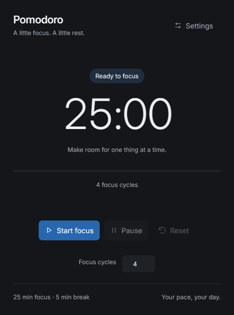
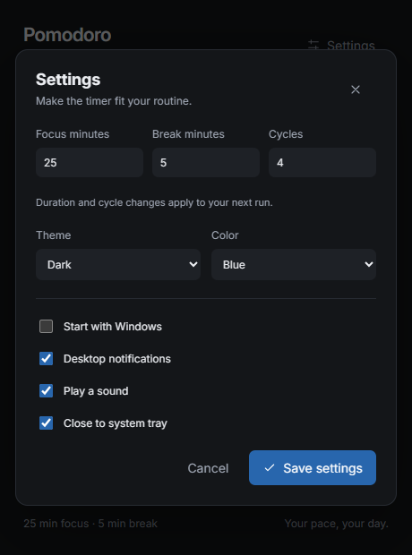

01
FocusStart one task
Choose Start focus and give one task your attention. The countdown and progress bar show where you are in the session.
Pause and resume anytime
Give one task your attention, then take a real break. Pomodoro Timer keeps your rhythm with configurable focus cycles, a quiet system tray, and a simple interface that stays out of your way.
A project by MiuBitz

Start with 25 minutes of attention and a 5-minute break, or choose durations that suit your day.
Pause when life interrupts. Close to the tray while Rust keeps the timer running in the background.
No account or cloud sync. Your preferences stay on your computer, and the app works offline.
Your focus & rest flow
A small routine for the task in front of you, with space to recharge between sessions.
Choose Start focus and give one task your attention. The countdown and progress bar show where you are in the session.
Breaks start automatically. Optional desktop notifications and sound tell you when the phase changes.
The next focus session starts after your break. Every cycle includes both phases, including a final break.
Keep the session small and specific. A draft, one fix, or a page of reading is a place to start.
Step away from the screen. The next focus phase starts automatically when your break ends.
Pause freezes the remaining time. Resume continues from there, and Reset returns to a fresh session.
09:00 Focus · Cycle 1
09:25 Break · 5 minutes
09:30 Focus · Cycle 2
09:55 Break · 5 minutes
10:00 Focus · Cycle 3
10:25 Break · 5 minutes
10:30 Focus · Cycle 4
10:55 Final break · 5 minutes
11:00 All cycles complete
Tailored to you
Choose durations that fit your work, and try a new look without committing to it.
Save settings to keep changes. Cancel, close, or Escape restores your previous look. Duration changes apply to the next run.
Good to know
Download PomodoroTimer.exe, put it in a folder you want to keep, and run it. This Windows x64 build needs the Microsoft Edge WebView2 Runtime. No account or Node.js installation is needed.
Settings stay in %APPDATA%\PomodoroTimer\settings.json. Valid settings from the previous C# version are accepted. The app does not collect work logs or sync to a server.
Pause and Resume keep your place. Reset ends the run and returns to the configured focus duration. Settings edits apply to the next run, so active sessions keep their original durations and cycle count.
With Close to system tray enabled, closing the window keeps the timer running. Click the icon once to reopen; right-click for Open and Exit. Optional notifications and sound announce phase changes. Portable notifications use Windows' built-in PowerShell host, which may appear as the sender.
Exit ends the run. Sessions are not restored after restarting. Every cycle includes a break, including the last cycle. Windows notification settings may suppress desktop alerts.
Start your next focus session with a timer that feels at home on your desktop.